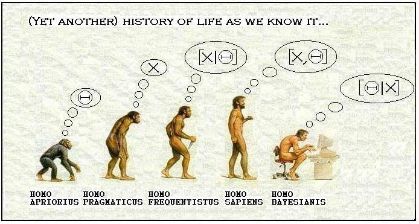

Why be Bayesian
![]()

Many times I have been asked by co-workers and people around me who are a bit familiar with statistics why I choose to be Bayesian and whether I feel confident in using this approach for my data analysis rather than the most widely accepted frequentist methods, at least in my research area. Well, I am sure there are many valid arguments I could use to reply to this question but if I have to summarise my answer in two words I would say: why not?
Now, a bit more into the details for those who were not extremely annoyed by my previous sentence. So, I truly believe that the Bayesian approach can be considered as a complement rather than a substitute to the frequentist paradigm. The main reason is relate to its much stronger links with probability theory compared with the classical approach in that not only are sampling distributions required for summaries of data, but also a wide range of distributions are used to represent prior opinion about proportions, event rates, and other unknown quantities. In a nutshell, the key difference between the two approaches is how they confront the concept of probability of a certain event. In fact, although there is general consensus about the rules of probability, that there is no universal concept of probability, and two quite different definitions come from the frequentist and Bayesian approach:
The most widely known definition is: the proportion of times a will occur in an infinitely long series of repeated identical situations. This is known as the frequentist perspective, as it rests on the frequency with which specific events occur.
In contrast, the Bayesian approach rests on an essentially subjective interpretation of probability, which is allowed to express generic uncertainty or degree of belief about any unknown but potentially observable quantity, whether or not it is one of a number of repeatable experiments.
Rather than debating on philosophical debates about the foundations of statistics I prefer to focus on those aspects which I believe make the Bayesian approach, if not more intuitive than the frequentist counterpart, at least more attractive. Be worn I am not trying to start a war as I think both approaches could be used without the need to completely discard the other. The simple fact of being able to choose between two methods, rather than restricting themselves to a single option, seems a good enough reason for me to advocate the use of both approaches. I terms of your own knowledge, experience and skills, You do not gain anything by saying “I will never be Bayesian” or “I will never be a frequentist”. On the contrary, by opening your mind and explore the use of one or the other method you will be able to have more options at your disposal that you can use to tackle the different problems you will face in your analyses.
For the purpose of this post I just want to highlight some aspects which make the Bayesian approach particularly useful and, in some cases, even arguably preferable than the frequentist approach. Note that I am well aware there could be cases where the opposite holds and this is precisely why I believe it is important that statisticians should become familiar with both methods. By doing so they will be able to overcome the limitations/concerns associated with one method for a specific problem at hand using the instruments made available from the other method. Since I am a Bayesian, here I want to report the reasons and situations in which the Bayesian approach could provide a powerful tool.
Let us start with a quick recap of the basic principle behind Bayesian methods. Bayesian statistical analysis relies on Bayes’s Theorem, which tells us how to update prior beliefs about parameters and hypotheses in light of data, to yield posterior beliefs. The theorem itself is utterly uncontroversial and follows directly from the conventional definition of conditional probability. If \(\theta\) is some object of interest, but subject to uncertainty, e.g. a parameter, a hypothesis, a model, a data point, then Bayes Theorem tells us how to rationally revise prior beliefs about \(\theta\), \(p(\theta)\), in light of the data \(y\), to yield posterior beliefs \(p(y \mid \theta)\). In this way Bayes Theorem provides a solution to the general problem of induction, while in the specific case of statistical inference, Bayes Theorem provides a solution to problem of how to learn from data. Thus, in a general sense, Bayesian statistical analysis is remarkably simple and even elegant, relying on this same simple recipe in each and every application.
As I see it, there are a few major reasons why statisticians should consider learning about the Bayesian approach to statistical inference, and in the social sciences in particular:
- Bayesian inference is simple and direct
The result of a Bayesian analysis is a posterior probability statement, ‘posterior’ in the literal sense, in that such a statement characterizes beliefs after looking at data. Examples include: the posterior probability that a regression coefficient is positive, negative or lies in a particular interval; the posterior probability that a subject belongs to a particular latent class; the posterior probabilities that a particular statistical model is true model among a family of statistical models.
Note that the posterior probability statements produced by a Bayesian analysis are probability statements over the quantities or objects of direct substantive interest to the researcher (e.g. parameters, hypotheses, models, predictions from models). Bayesian procedures condition on the data at hand to produce posterior probability statements about parameters and hypotheses. Frequentist procedures do just the reverse: one conditions on a null hypothesis to assess the plausibility of the data one observes (and more ‘extreme’ data sets that one did not observe but we might have had we done additional sampling), with another step of reasoning required to either reject or fail to reject the null hypothesis. Thus, compared to frequentist procedures, Bayesian procedures are simple and straightforward, at least conceptually.
- Hierarchical modeling
The prior density also provides a way for model expansion when we work with data sets that pool data over multiple units and/or time periods. Data sets of this sort abound in the social sciences. Individuals live in different locations, with environmental factors that are constant for anyone within that location, but vary across locations. key question in research of this type is how the causal structure that operates at one level of analysis (e.g. individuals) varies across a ‘higher’ level of analysis (e.g. localities or time periods). The Bayesian approach to statistical inference is extremely well-suited to answering this question. Recall that in the Bayesian approach parameters are always random variables, typically (and most basically) in the sense that the researcher is unsure as to their value, but can characterize that uncertainty in the form of a prior density \(p(\theta)\). We can replace the prior with a stochastic model formalizing the researcher’s assumptions about the way that parameters \(\theta\) might vary across groups \(j = 1,..., J\) , perhaps as a function of observable characteristics of the groups; e.g., \(\theta_j \sim f (z_j, \gamma )\), where now \(\gamma\) is a set of unknown hyperparameters. That is, the model is now comprised of a nested hierarchy of stochastic relations: the data from unit \(j\), \(y_j\), are modeled as a function of covariates and parameters \(\theta_j\) , while cross-unit heterogeneity in the \(\theta_j\) is modeled as function of unit-specific covariates \(z_j\) and hyperparameters \(\gamma\). Models of this sort are known to Bayesians as hierarchical models, but go by many different names in different parts of the social sciences depending on the specific form of the model and the estimation strategy being used (e.g. ‘random’ or ‘varying’ coefficients models, ‘multilevel’ or ‘mixed’ models). Compared with the frequentist counterpart, thanks to the use of Markov chain Monte Carlo (MCMC) methods, Bayesian computation for these models has also become rather simple. Indeed, MCMC algorithms have proven themselves amazingly powerful and flexible, and have brought wide classes of models and data sets out of the ‘too hard’ basket. Other modelling examples include data sets with lots of missing data, or models with lots of parameters, model with latent variables, mixture models, and flexible semi-and non-parametric models.
- Statistically significant?
Frequentist inference asks assuming hypothesis \(H_0\) is true, how often would we obtain a result at least as extreme as the result actually obtained?’, where ‘extreme’ is relative to the hypothesis being tested. If results such as the one obtained are sufficiently rare under hypothesis \(H_0\) (e.g. generate a sufficiently small p value), then we conclude that \(H_0\) is incorrect, rejecting it in favor of some alternative hypothesis. Indeed, we teach our students to say that when the preceding conditions hold, we have a statistically significant result. My experience is that in substituting this phrase for the much longer textbook definition, people quickly forget the frequentist underpinnings of what it is they are really asserting, and, hence seldom question whether the appeal to the long-run, repeated sampling properties of a statistical procedure is logical or realistic. In the Bayesian approach we condition on the data at hand to assess the plausibility of a hypothesis (via Bayes Rule), while the frequentist approach conditions on a hypothesis to assess the plausibility of the data (or more extreme data sets), with another step of reasoning required to either reject or fail to reject hypotheses. The frequentist p-value is the relative frequency of obtaining a result at least as extreme as the result actually obtained, assuming hypothesis \(H_0\) to be true, where the sampling distribution of the result tells us how to assess relative frequencies of possible different results, under \(H_0\). But what about cases where repeated sampling makes no sense, even as a thought experiment?
- Intervals
Recall that in the frequentist approach, parameters are fixed characteristics of populations, so \(\mu\) either lies in the interval or it doesn’t. The correct interpretation of a frequentist confidence interval concerns the repeated sampling characteristics of a sample statistic. In the case of a \(95\%\) confidence interval, the correct frequentist interpretation is that \(95\%\) of the \(95\%\) confidence intervals one would draw in repeated samples will include \(\mu\). Now, is the \(95\%\) confidence interval that one constructs from the data set at hand one of the lucky \(95\%\) that actually contains \(\mu\), or not? No ones knows.
- Rational subjectivity
Finally, aside from acknowledging the subjectivity inherent to the general scientific exercise, the Bayesian approach rests on a subjective notion of probability, but demands that subjective beliefs conform to the laws of probability. Put differently, in the Bayesian approach, the subjectivity of scientists is acknowledged, but simultaneously insists that subjectivity be rational, in the sense that when confronted with evidence, subjective beliefs are updated rationally, in accord with the axioms of probability. Again, it is in this sense that Bayesian procedures offer a more direct path to inference; as I put it earlier, the Bayesian approach lets researchers mean what they say and say what they mean. For instance, the statement, having looked at the data, I am \(95\%\) sure that \(\mu\) is included in an interval is a natural product of a Bayesian analysis, a characterization of the researcher’s beliefs about a parameter in formal, probabilistic terms, rather than a statement about the repeated sampling properties of a statistical procedure.
Conclusions
The mathematics and computation underlying Bayesian analysis has been dramatically simplified via a suite of MCMC algorithms. The combination of the popularization of MCMC and vast increases in the computing power available to social scientists means that Bayesian analysis is now well and truly part of the mainstream of quantitative social science. Despite these important pragmatic reasons for adopting the Bayesian approach, it is important to remember that MCMC algorithms are Bayesian algorithms: they are tools that simplify the computation of posterior densities. So, before we can fully and sensibly exploit the power of MCMC algorithms, it is important that we understand the foundations of Bayesian inference.
This time I went overboard with the discussion but I thought it could be interesting to clarify here the key points, in my opinion, which make the Bayesian approach not only valid and efficient, but even a powerful tool that, once grasped the underlying philosophy, can be used to overcome the difficulties of standard methods, especially when dealing with complex analyses.
So what are you waiting for? do not sit in your frequentist comfort zone but expand your statistical knowledge! Evolve!